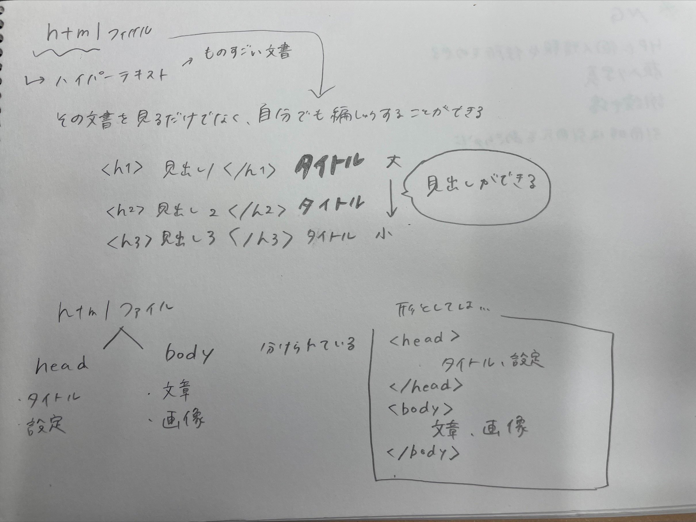

- gitについて
gitには3つの種類がある！
更新したいときに重要なのは、add→commit→push
この3つの段階を覚えておくことが大事。
addコマンド
変更した内容を反映させることができる。
commitコマンド
変更した日を記入できることによって更新日を分かるようにしている。
簡単に言えば、変更内容の履歴を残すためのラベリングをする。
pushコマンド
GitHubというリモートリポジトリーに送信することができる。
GitHubに更新する方法
ホームページを編集した後に、GitHubに反映させたい時は、GitBashの3段階のコマンドを行うことで反映させる。
- htmlについて
htmiとは,,,
簡単に言えば、すげぇ～ファイルのこと言う。
htmlの基本
タグの付け方
見やすいようにタイトルの大きさや文字の色を帰ることで変更することができる。
＊簡単にまとめたもの＊

htmlファイルには、headとbodyの2つの種類にわかれている。
head
→タイトルと設定 body
→文章と画像